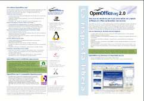
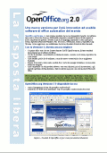
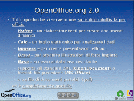

Materiale Promozionale OpenOffice.org
Materiale promozionale per OpenOffice.org in vari formati.| Articolo | Anteprima | Info |
| Presentazione OpenOffice.Org Linux Day 2006 - versione PLIO | Titolo: Presentazione OpenOffice.org - versione PLIO Mercato: Generale Sinossi: Schermate e caratteristiche dei principali componenti. Uso: Visualizzazione delle slide tramite proiettore. Licenza: PDL Lingua: Italiano Progetto: Marketing Commenti: File sorgente è disponibile qui: OpenOfficeOrgLD2006.odp |
|
| Volantino Prodotto Italiano A3 OOo 2 |  (formato pdf, 600kb) |
Titolo:
Volantino Prodotto OOo 2.0 Mercato: Generale Sinossi: Schermate e caratteristiche dei principali componenti; mercati target e benefici Uso:Stampa a colori su A3 fronte-retro e piegare per formare un opuscolo di quattro pagine formato A4. Funziona bene con le Specifiche prodotto come inserto. Licenza: PDL Lingua: Italiano Progetto: Marketing Commenti: File sorgente è disponibile qui: ooo2prodflyera3it.odt Issue: 47686 |
| Volantino Prodotto Italiano A4 OOo 2 |  (formato pdf, 600kb) |
Titolo: Volantino
Prodotto OOo 2.0 Market: Generale Sinossi: Schermate e caratteristiche dei principali componenti; mercati target e benefici Uso: Stampa a colori su quattro pagine A4. Licenza: PDL Lingua: Italiano Progetto: Marketing Commenti: File sorgente è disponibile qui: ooo2prodflyera4it.odt Issue: 47686 |
| Specifiche Prodotto Italiano A4 OOo 2 |  (formato pdf, 90kb) |
Titolo:
Specifiche Prodotto Italiano OOo 2.0 Market: Generale Sinossi: Elenco delle caratteristiche principali e novità in OOo 2.0. Può essere usato come inserto con il volantino Prodotto A3. Uso: Stampa a colori su due pagine A4. Licenza: PDL Lingua: Italiano Progetto: Marketing Commenti: File sorgente è disponibile qui: ooo2prodspeca4it.odt Issue: 47476 |
| Presentazione Prodotto Italiano OOo 2 |  (visualizza sullo schermo in una nuova finestra) |
Titolo:
Presentazione Prodotto Italiano OOo 2.0 Market: Generale Sinossi: Elenco delle principali caratteristiche e schermate dei componenti con tasti di navigazione. Uso: Le pagine sono formattate per presentazione su schermo. Licenza: PDL Lingua: Italiano Progetto: Marketing Commenti: File sorgente è disponibile qui: ooo2prodintroit.odp Issue: 53340 |
| poster_A4_OOoFreeYourself.png
(A4) poster_A3_OOoFreeYourself.png (A3) |
|
Titolo:
:
Free Yourself - poster OpenOffice.org Autore: Cristian Driga (cdrigaATopenoffice.org) Descrizione: Versione normale in formato A4 e A3 a 300dpi di risoluzione. Licenza: : PDL Lingua: Italiano Progetto: Marketing Date: 2004-09-03 18:53:19.173322+08 Commenti: File sorgenti (formato file XCF - GIMP) sono disponibili qui: poster_A4_OOoFreeYourselfit.xcf poster_A3_OOoFreeYourselfit.xcf |
| poster_A4_OOoFreeYourself_nega.png (A4) |  |
Titolo:
:
Free Yourself - poster OpenOffice.org Autore: Cristian Driga (cdrigaATopenoffice.org) Descrizione: Versione con colori invertiti per minore consumo di inchiostro in formato A4 a 300dpi di risoluzione. Licenza: : PDL Lingua: Italiano Progetto: Marketing Date: 2004-09-03 18:53:19.173322+08 Commenti: File sorgente (formato file XCF - GIMP) è disponibile qui: poster_A4_OOoFreeYourself_negait.xcf |
| |
Titolo:
:
Analisi Comparativa tra Suites di
applicazioni software per l'ufficio, di Martijn Dekkers, rilasciata
sotto licenza GNU GPL Autore: Martijn Dekkers Licenza: GNU GPL Formato: SXW - PDF |
|
| |
|
Titolo:
:
|
| |
|
Titolo:
: Banner e logo per links E' bene accetto qualunque tipo di pubblicità per il progetto OpenOffice.org, per esempio Links dai vostri siti web o delle firme speciali nelle vostre mail. I banner mostrati in questa pagina sono stati creati per questo scopo. Inglese Italiano |


{kind=link}
{kind=link}
{kind=link}